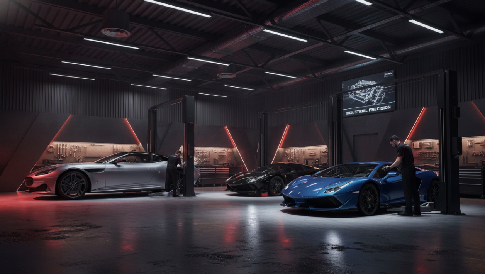

Especialistas em funilaria de alto padrão e pintura técnica. Restauramos a alma do seu veículo com o rigor de uma linha de montagem.
Falar com EspecialistaA Irmãos da Lataria nasceu da paixão de dois irmãos por carros e tudo que envolve o cuidado e a estética automotiva...
Mais do que um trabalho, cuidar de carros é algo que faz parte da nossa história. Cada serviço realizado é tratado com atenção, dedicação e respeito.
Aqui, você encontra um atendimento próximo, transparente e feito por quem realmente ama o que faz.

Utilizamos tecnologia de ponta e insumos premium para garantir um acabamento impecável em cada projeto.
Reparação estrutural com gabaritos de precisão. Recuperamos a geometria original do seu carro.
Laboratório próprio para acerto de cores e cabine de pintura pressurizada com garantia de durabilidade.
Detalhamento técnico e proteção cerâmica. Remoção de riscos e restauração do brilho profundo.

Solicite um orçamento técnico hoje mesmo e descubra o padrão de excelência Irmãos da Lataria.